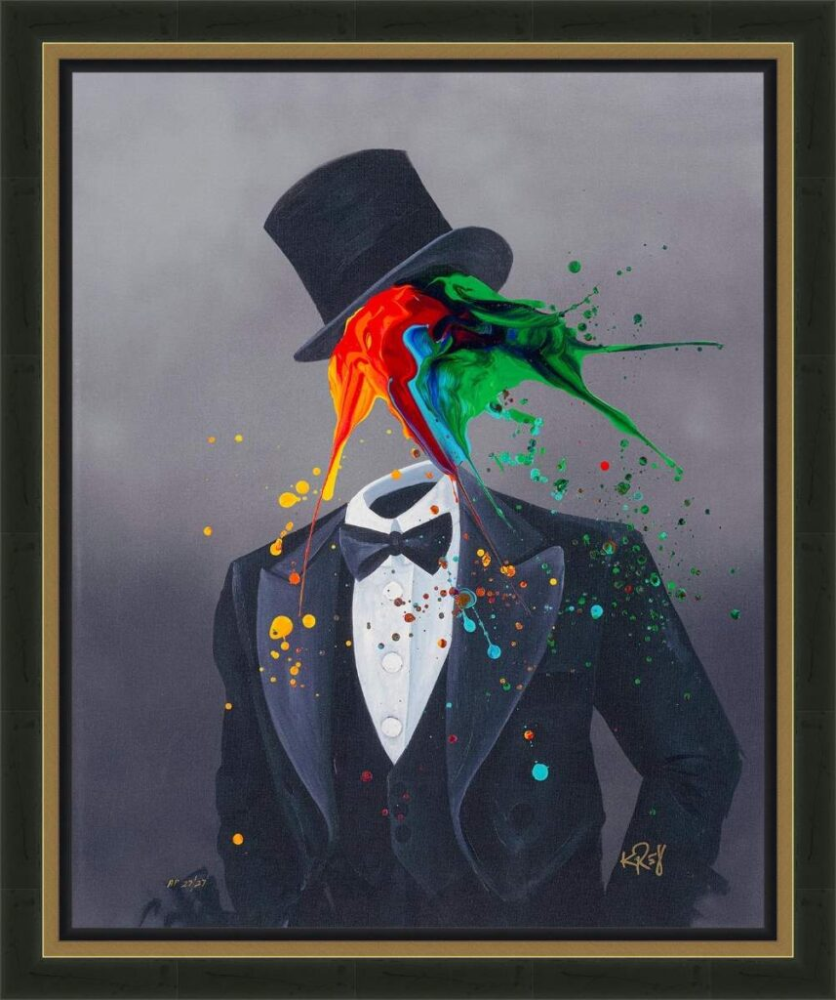

Class Act
by Kre8

In “Class Act,” Kevin “Kre8” Vigil delivers a stunning visual metaphor for the duality of the modern individual: the composed exterior versus the vibrant, chaotic spirit within. This piece is a quintessential example of “Kre8tizm,” fusing high-fashion realism with explosive abstract expressionism.
The subject is dressed to the nines in a sharp black tuxedo, crisp white shirt, and bowtie, topped with a floating top hat—the ultimate symbols of sophistication and structure. However, where a face would typically be, Kre8 unleashes a dynamic splash of primary colors—reds, blues, greens, and yellows—that bursts outward from the collar. This brilliant explosion defies the rigidity of the formal wear, suggesting that true “class” is not just about appearance, but about the creativity and energy one projects into the world.
Set against a signature misty grey background, the colors vibrate with intensity. The faceless nature of the subject invites the viewer to step into the suit, imagining themselves as the source of that boundless creative power.
Artwork Details:
- Medium: Giclée on Canvas with Hand Embellishment / Mixed Media (Archives may vary)
- Style: Abstract Surrealism / Urban Pop / “Kre8tizm”
- Key Elements: Tuxedo and top hat, faceless figure, multicolored paint splash, grey mist background
- Signature: Hand-signed by the artist (Bottom Right)
- Dimensions
- 25 in x 20 in
- Reg. / Lot No.
- 756238.0150